1.6
Ørkenløp
Dette er et spill for to, der en papegøye og en løvinne kjemper om å komme først gjennom ørkenen. Hver spiller må trykke en tast så fort og ofte som mulig for å flytte figuren sin, og den som kommer først til kanten av skjermen vinner.

Vi begynner med å få på plass bakgrunnen og figurene.
 . Velg
. Velg Natur/desert.slett. . Velg
. Velg Dyr/Lionness.Dyr/Parrot. Krymp figuren slik at den er omtrent like stor som løvinnen ved å bruke  .
.Vi vil at figurene skal bevege seg når du trykker på en knapp.
Velg først løvefiguren og få den til å gå 4 steg når du trykker ‘L’ tasten.
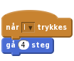
Velg så papegøyefiguren og la den gå 4 steg når du trykker ‘A’ tasten.
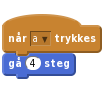
Klikk på det grønne flagget.
A og L tastene?Nå må vi kjøre i gang kappløpet og kåre en vinner. Vi begynner med å lage startknapp.
Ting/Button3. Flytt den til midten av scenen.Drakter-fanen og verktøyet T for å legge til tekst. Trykk på venstre kant av knappen for å legge til et tekstfelt og skriv inn teksten Start. Du kan flytte på teksten ved å trykke en gang på den, og endre innhold ved å dobbeltklikke.Legg nå til et skript som viser figuren når spillet starter:
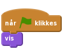
I tillegg vil vi at knappen først teller ned fra 3, sier LØP! og deretter blir skjult når den klikkes. Dette ordner du med følgende skript:
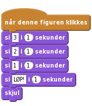
Klikk på det grønne flagget, og deretter på startknappen.
LØP!?Vi ønsker at figurene bare beveger seg etter at kappløpet er startet og vi ønsker å vite når kappløpet er over.
kappløp. Variabelen skal være tilgjengelig for alle figurer. Fjern avhukingen foran variabelen, slik at den ikke vises på scenen.Sett kappløp til 0 når spillet startes ved å forandre når grønt flagg klikkes-skriptet slik:
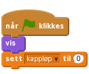
kappløp-verdien til 1. Dette gjør du ved å legge til klossen Sett kappløp til 1 under si 1 i 1 sekunder i skriptet som starter med når denne figuren klikkes.Nå må vi lage en regel som sier at figurene bare får lov til å bevege seg etter at løpet har startet – det vil si når kappløp har verdien 1. Klikk først på papegøyen. Så endrer du:
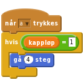
Gjenta det samme for løvinnen.
Klikk på det grønne flagget.
Nå vil vi finne ut hvem som vinner kappløpet, og i tillegg gjøre klart for en ny runde.
Legg til en kloss i papegøyens skript som sier sett kappløp til 0 hvis figuren berører kanten av skjermen:
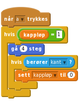
Spill så inn en lyd som skal spilles av hvis papegøyen vinner.
Trykk på Lyder-fanen og deretter mikrofon-ikonet og spill inn en morsom trudelutt! Opptaket starter når du har klikket på rundingen slik at den blir rød. Klikk stopp (firkanten) når du er ferdig, og gi lyden et navn – for eksempel Polly. Noen nettlesere kan spørre om tillatelse til å spille inn lyd. Hvis du ikke ønsker dette, bruk lydene som følger med figurene.
Deretter legger du til klossene som spiller lyden og lar papegøyen fortelle at den vant:
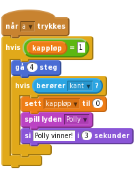
Gjør tilsvarende for løvinnen.
Klikk på det grønne flagget.
A og L?Når kappløpet er over må vi fortelle de andre figurene at spillet er over og nullstille spillet, slik at er klart for en ny runde.
Klikk på papegøyefiguren og legg til en kloss som sender melding Avslutt etter at figuren sier den har vunnet.
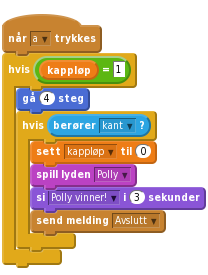
Vi trenger nå et nytt skript som lytter etter denne avslutningsmeldingen og flytter papegøyen tilbake til start.
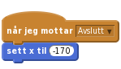
x-verdier for å være sikker på at løvinnen og papegøyen starter fra samme sted.For at figurene skal stå på startstreken når kappløpet starter den aller første gangen må vi også legge til følgende klosser på begge figurene:
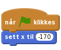
For at spillerne skal kunne klikke i gang nye runder må vi passe på at start-knappen kommer tilbake etter hver avsluttet runde. Klikk på startknapp-figuren og legg til et skript som viser knappen når avslutningsmeldingen blir mottatt.
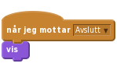
Klikk på det grønne flagget.
A, og den andre løvinnen ved å trykke L.Spillet er ferdig! Hvis du vil kan du velge Legg ut slik at venner og familie også kan spille det.
Nedenfor er det noen forslag og ideer til hvordan du kan utvide spillet og gjøre det enda mer interessant.
Nedenfor er et forslag til hvordan et rakett-skript kan se ut. Du må legge til noen lyder og variabler på egen hånd.
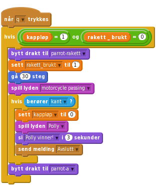
Klikk på det grønne flagget.
Koden som brukes til å sjekke om kappløpet er over brukes nå to steder for hver figur; når figuren beveger seg normalt og når den beveger seg med rakett. Vi kan forenkle skriptet vårt ved å bruke en egendefinert kloss. Dette er en samling kode som brukes flere steder. Det er nesten som at vi lager vår egen Scratch-kodekloss!
Flere klosser-paletten og klikk så på Lag en kloss knappen.ferdig og trykk OK.definer ferdig-kloss i skriptvinduet ditt. Flytt den litt for seg selv.hvisberører kant?-klossen og dra den til definer ferdig-klossen.ferdig-klossen fra paletten og bruke den på samme måte som andre kodeklosser?Slett den andre hvisberører kant?-klossen fra skriptet ditt og erstatt også den med en ferdig-kloss.
![definer ferdig
hvis (berører [kant v]?)
sett [kappløp v] til (0)
spill lyden [Polly v]
si [Polly vinner! v] i (3) sekunder
send melding [Avslutt v]
når [a v] trykkes
hvis <(kappløp) = [1]>
gå (4) steg
ferdig
når [q v] trykkes
hvis <((kappløp) = (1)) og ((rakett_brukt) = (0))>
bytt drakt til [parrot-rakett v]
sett [rakett_brukt v] til (1)
gå (30) steg
spill lyden [motorcycle passing v]
ferdig
bytt drakt til [parrot-a v]](1a9107d1a5da40d1ea2644729a2a444e0a3f6e0e.png)
Gjør dette koden din enklere å lese? Kan du lage en tilsvarende egendefinert kloss for løvinnen?
Klikk på det grønne flagget.
Veldig bra! Nå er du ferdig og kan kose deg med spillet du har laget!